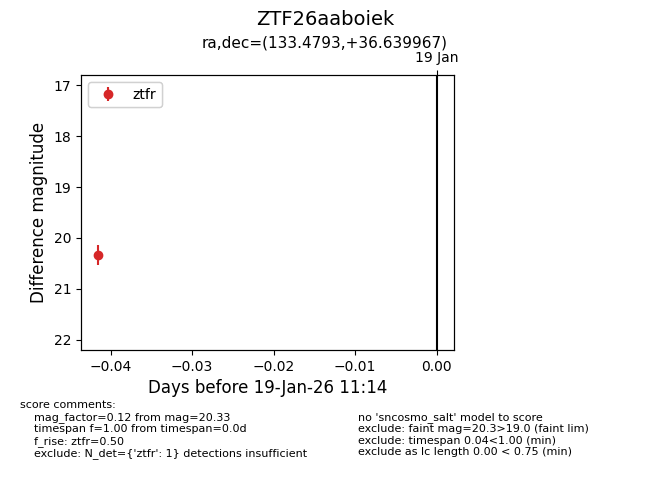
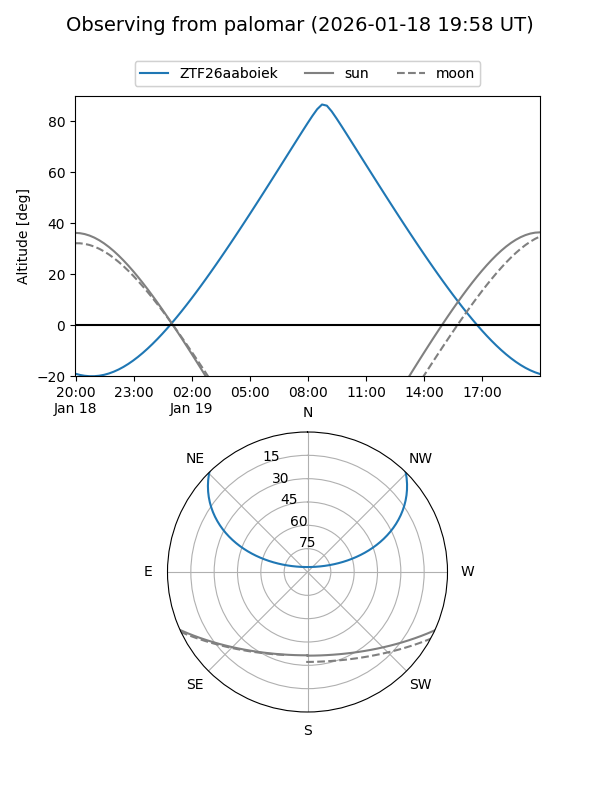

ZTF26aaboiek
Target ZTF26aaboiek at 2026-01-19 11:16
Aliases and brokers:
FINK: link
Lasair: link
ALeRCE: link
alt names
ZTF26aaboiek (ztf,fink_ztf)
Coordinates:
equatorial (ra, dec) = 133.4793,+36.63997
equatorial (HMS+DMS) = 08:53:55.03,+36:38:23.88
galactic (l, b) = (186.3992,+39.48360)
Flags:
Photometry:
last ztfr=20.33
1 ztfr detections
Lightcurve

Visibility


Additional plots